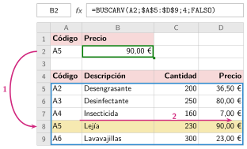

Buscar datos con BUSCARV
Criterios: 3b, 3f
🤔 Pienso10 min
Qué hago aquí: Piensa un momento y contesta con lo que ya sabes. No pasa nada si no lo sabes: es para empezar.
Un cliente pide el producto A5. Tienes el catálogo en papel con código, descripción y precio. Explica paso a paso cómo encuentras el precio.
📖 Leo y aprendo40 min
Qué hago aquí: Lee despacio, mira los dibujos y los ejemplos, y quédate con la idea clave del final.
BUSCARV hace lo mismo que tú con el catálogo: busca un dato en la primera columna de una tabla y, en esa fila, devuelve lo que hay en otra columna. La V es de vertical: busca hacia abajo.

El último argumento decide cómo busca:
- FALSO (coincidencia exacta): busca exactamente ese dato. Es lo normal con códigos, DNI o nombres. Si no lo encuentra, da #N/D.
- VERDADERO (coincidencia aproximada): si no está el dato, toma el valor más cercano por debajo. Sirve para tramos (premios por puntos, descuentos por importe). La primera columna tiene que estar ordenada de menor a mayor.
BUSCARH hace lo mismo con tablas en horizontal: busca en la primera fila y devuelve el dato de otra fila. En Microsoft 365 también existe BUSCARX, que busca en cualquier columna.
=BUSCARV(qué busco; tabla; columna; FALSO). Busca en la primera columna de la tabla y devuelve el dato de la columna que le digas.✏️ Hago160 min
Qué hago aquí: Haz las actividades en orden. Empieza siempre por las básicas.
Con la tabla del dibujo, ¿qué da cada fórmula?
Busca, en la tabla de ciudades, el país al que pertenece la ciudad que escribas.
El almacén. Al escribir un código, la hoja debe dar la descripción, el precio y la cantidad en almacén. Resalta con formato condicional los precios de más de 50 € y añade barras de datos rojas a las cantidades.
Albarán automático. Con la tabla del almacén, haz un albarán que, al escribir el código y la cantidad, rellene la descripción, el precio, el importe, el subtotal, el IVA y el total.
Asigna el premio de cada ganador según sus puntos (coincidencia aproximada). Explica por qué la tabla de premios tiene que estar ordenada.
¿Para qué usaría BUSCARV un administrativo? Escribe tres ejemplos de su trabajo.
🚀 Amplío (si quieres saber más)
Qué hago aquí: ¿Has terminado? Lee la curiosidad o elige el reto. Es voluntario.
Rehaz el almacén con BUSCARH (con la tabla en horizontal) y después con BUSCARX. ¿Qué ventaja tiene BUSCARX?
✅ Compruebo10 min
Qué hago aquí: Contesta sin mirar la ficha y marca cómo lo llevas.